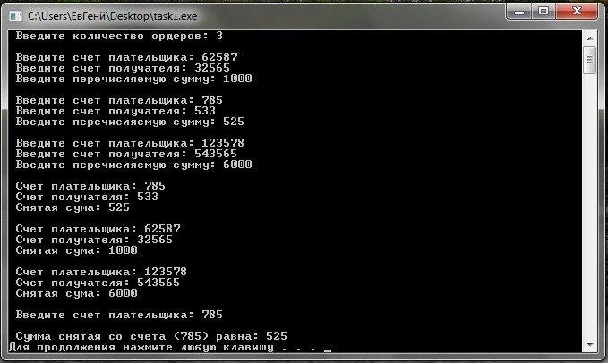
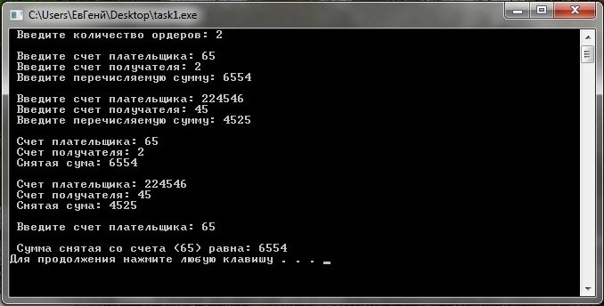
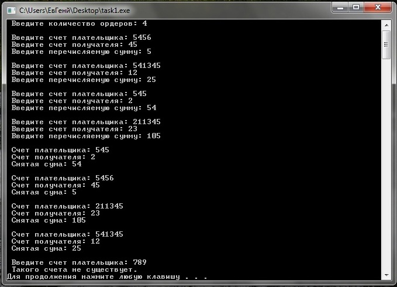

Лабораторное задание №12. Массив структур.
Условие задачи
Описать
структуру с именем ORDER, содержащую следующие поля:
·
расчетный счет плательщика;
·
расчетный счет получателя;
·
перечисляемая сумма в руб.
Написать программу, выполняющую
следующие действия:
·
ввод с клавиатуры данных в массив,
состоящий из k <=10 элементов
типа ORDER;
·
записи должны быть размещены в
алфавитном порядке по расчетным счетам плательщиков;
·
вывод па экран информации о сумме,
снятой с расчетного счета плательщика, введенного с клавиатуры;
·
если такого расчетного счета нет, выдать
на экран соответствующее сообщение.
Математическая модель
Для решения поставленой задачи нам будет необходима структура order состоящая
из переменнай хронящай: счет плательщика, счет получателя и
перечисляемая сумма. В главной ф-ии main выведем сообщение о вводе
количества счетов, определим структуру состоящую из 10 полей
(подструктур). Определим ф-ии обеспечивающие ввод вывод информации,
сортировку массива и вывод отсортированого массива на экран. Вводим
номер счета получателя который необходимо найти в структуре и
вывести сумму снятую со счета. Далее подробнее рассмотрим каждую из
ф-ий.
Ф-ия обеспечивающая ввод информации. В этой ф-ии
определяем цикл и вводим с клавиатуры запрашиваемые поля. т.е. Счет
плательщика, счет получателя и перечисляемую сумму.
Ф-ия обеспечивающая сортировку массива. Сортировку
массива будем проводить по методу "пузырька". т.е. определяем 2 цикла
предназначеные для вычисления индексов. Во вложеном цикле определяем
инструкцию if проверям какой из элементов больше. Если i счет
плательщика > j счета плательщика (i=0, j=i+1, i++, j++) то элементы
с индексом i нужно поменять местами с j. Для этого зоводим переменную,
которой присваиваем значение i-ых элементов структуры. После чего i-му
элементу структуры присваиваем j-ый элемент структуры и j-му элементу
структуры присваеваем значение переменной в которой хронится значение
i-го элемента структуры. Если же i<j то ничего не выполняется.
В этом и заключается метод "пузырька".
Ф-ия обеспечивающая вывод сформулированой структуры
в алфовитном порядке по расчетным счетам плательщика. Эта ф-ия выводит
на экран сформулированую структуру в алфовитном порядке.
Ф-ия находящая счет, введенного с клавиатуры, в
структуре и выводит снятую сумму с расчетного счета лательшика на
экран. Определяем флаг и задаем ему значение false, он пригодится для
вывода сообщения если введеного счета в структурк не существует. Далее
определяем цикл, который будет вычислять индекс расчетного счета
плательщика. При помоши инструкции if сравниваем i-ый расчетный счет
плательшика со счетом введеного с клавиатуры. Если счет совподает
то на экран выводим значение суммы снятой с расчетного счета
плательщика и флагу присваеваем значение true. Затем при помощи
инструкции if проверяем чему равен флаг. Если он равен false то на
экран выводится сообщение о том что такого счета не существет. Если же
флаг НЕ равен значению false (т.е. true) то на экран ничего не
выводится.
Описание алгоритма
Для решения задачи нам необходима структура order с переменными в нутри структуры payer (переменная хронящая счет плательщика), addressee (переменная хронящая счет получателя), sum (переменная хронящая сумму снятую с расчетного счета плательщика). Затем в главной ф-ии main запрашиваем ввод переменной n, которая хранит количество ордеров. Определяем структуру order (order orders[10]), в этой программе она будет использоватся на подобии массива. Определяем ф-ию input_info (orders, n) на
вход в которую будем передовать доступ к структуре и количество
ордеров, эта ф-ия будет осуществлять ввод информации о счетах.
Определяем ф-ию sorting(orders, n) на
вход в которую будем передовать доступ к структуре и количество
ордеров, эта ф-ия будет осуществлять сортировку структуры в алфовитном
порядке по расчетным счетам плательщика. Заводим ф-ию output_info (orders, n) на
вход в которую будем передовать доступ к структуре и количество
ордеров, эта ф-ия будет осуществлять вывод отсортированой структуры в
аловитном порядке по расчетным счетам плательщика. Далее мы
подробнее рассмотрим ф-ии.
Ф-ия input_info (order orders[], int n), которая на вход получила доступ к структуре и количество ордеров. При помощи цикла for (int i=0; i<n; i++) заносим данные в структуру под определенным индексом i. т.е. вводим orders[i].payer -счет плательщика, orders[i].addressee - счет получателя, orders[i].sum - перечисляемую сумму.
Ф-ия sorting (order orders[], int n), которая
на вход получила доступ к структуре и количество ордеров, которая
сортирует структуру в алфовитном порядке по расчетным счетам
плательщиков. При помощи двух циклов for (int i=0; i<n-1; i++) и for (int i=0; i<n-1; i++) будем формироввать индексы элементов (индекс первого элемента на один больше чем второй индекс). Условной конструкцией if (orders[i].payer>orders[j].payer)
проверяем какой из элементов структуры (расчетные счета плательщиков).
Если первыи счет больше второго то пользуясь методом "пузырька"
сортируем масссив, этот метод был описан в математической модели. По
этому заводим переменную o=orders[i], orders[i]=orders[j] (т.е. первому элементу присваиваем значение второго элемента структуры, или расчетный счет плательщика) и orders[j]=o
(т.е. второй элемент равен первому элементу массива или счету
плательщика). Входе этих операций мы получили отсортированый массив в
алфовитном порядке по расчетным счетам плательщика.
Ф-ия output_info (order orders [], int n), которая на вход получила доступ к структуре и количество ордеров. Эта ф-ия, при помощи цикла for (int i=0; i<n; i++), выводит отсортированую структуру в алфовитном порядке по расчетным счетам плательщика. т.е. выводятся orders[i].payer, orders[i].addressee, orders[i].sum счет плательшика, получателя и сумму снятой со счета.
В главной ф-ии (ф-ии main) просим пользователя
ввести расчетный счет плательщика. т.е. заводим переменную s4et и помещаем туда значение введеное пользователем. Затем определяем ф-ию search_s4et (orders, n, s4et) предназначеную для нахождения введеного числа в структуре.
Выполняется ф-ия search_s4et (order orders [], int n, int s4et),
на вход эта ф-ия получает доступ к структуре, количество ордеров и
число которое ввел пользователь для нахождение его в структуре, по
поиску этого числа в расчетных счетах плательщиков. В нутри этой ф-ии
определяем переменную flag (bool flag=false) и присваеваем ей значение false. Он пригодится для
вывода сообщения если введеного счета в структуре не существует. В нутри цикла for (int i=0; i<n; i++) определяем инструкцию if (orders[i].payer==s4et)
которая сравнивает все счета плательшиков ,из структуры, с введеным
ползователем числом. Если это число равно какому либо счету
плательщика из структуры то на экран выводится сумма снятая с
этого числа (т.е. orders[i].sum ) и значению flag присвоется значение true ( т.е. flag=true). После выполнения этого цикла задается еще одна инструкция if (flag==false), в которой проверяется значение flag.
Если он равен false то на
экран выводится сообщение о том что такого счета не существет. Если же
флаг НЕ равен значению false (т.е. true) то на экран ничего не
выводится. =)
Текст программы с комментариями
#include <iostream>
using namespace std;
struct order
{
int payer; // переменная хронящая счет плательшика
int addressee; // переменная хронящая счет получателя
int sum; // переменная хронящая сумму
};
void input_info (order orders[], int n) // ф-ия определяющая ввод информации
{
for (int i=0; i<n; i++)
{
cout << endl;
cout << " Введите счет плательщика: "; // ввод номера счета плательщика
cin >> orders[i].payer;
cout << " Введите счет получателя: "; // ввод номера счета получателю
cin >> orders[i].addressee;
cout << " Введите перечисляемую сумму: "; // ввод перечисляемой суммы
cin >> orders[i].sum;
}
}
void sorting (order orders[], int n) // ф-ия обеспечивающая сортировку массивов
{
for (int i=0; i<n-1; i++)
{
for (int j=i+1; j<n; j++)
{
if (orders[i].payer>orders[j].payer)
{
order o=orders[i];
orders[i]=orders[j];
orders[j]=o;
}
}
}
}
void output_info (order orders [], int n) // ф-ия определяющая вывод информации
{
for (int i=0; i<n; i++)
{
cout << endl;
// вывод информации
cout << " Счет плательщика: " << orders[i].payer << endl;
cout << " Счет получателя: " << orders[i].addressee << endl;
cout << " Снятая сума: " << orders[i].sum << endl;
}
}
void search_s4et (order orders [], int n, int s4et)
{
bool flag=false;
for (int i=0; i<n; i++)
{
if (orders[i].payer==s4et)
{
cout << endl;
cout << " Сумма снятая со счета (" << s4et << ") равна: " << orders[i].sum << endl;
flag=true; // если flag=false то введеный счет существует и не будет выдаваться сообщение об ошибке
}
}
if (flag==false) // если flag=false то введеного счета не существует
{
cout << " Такого счета не существует. " << endl;
}
}
int main ()
{
int n;
cout << " Введите количество ордеров: "; //ввод количиства ордеров
cin >> n;
order orders[10];
input_info (orders, n); // ф-ия определяющая ввод информации
sorting(orders, n); // ф-ия обеспечивающая сортировку массивов
output_info (orders, n); // ф-ия определяющая вывод информации
int s4et; // переменная хронящая искомый счет плательщика
cout << endl << " Введите счет плательщика: ";
cin >> s4et;
search_s4et (orders, n, s4et); // поиск счета , веденного с клавиатуры, в массиве.
system ("pause");
return 0;
}
Откомпилированный файл может быть получен по ссылке
Тесты и анализ результатов
Тест 1
При вводе
количества ордеров:3. И привводе счета плательщика 62587, 785, 123578;
счете получателя 32565, 533, 543565; перечисляемой суммы 1000, 525,
6000; И вводд искомого счета плательщика: 785;
Результат работы программы представлен на рисунке ниже

Тест 2
При вводе количества ордеров:2. И привводе
счета плательщика 65,224546; счете получателя 2, 45; перечисляемой суммы 6554, 4525; И вводд искомого счета
плательщика: 6554;
Результат работы программы представлен на рисунке ниже

Тест 3
При вводе
количества ордеров:4. И привводе счета плательщика 5456, 541345, 545,211345;
счете получателя 45, 12, 2, 23; перечисляемой суммы 5, 25, 54,105; И вводд искомого счета плательщика: 789;
Результат работы программы представлен на рисунке ниже
